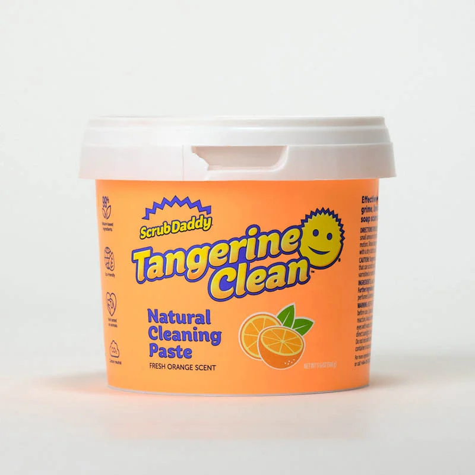
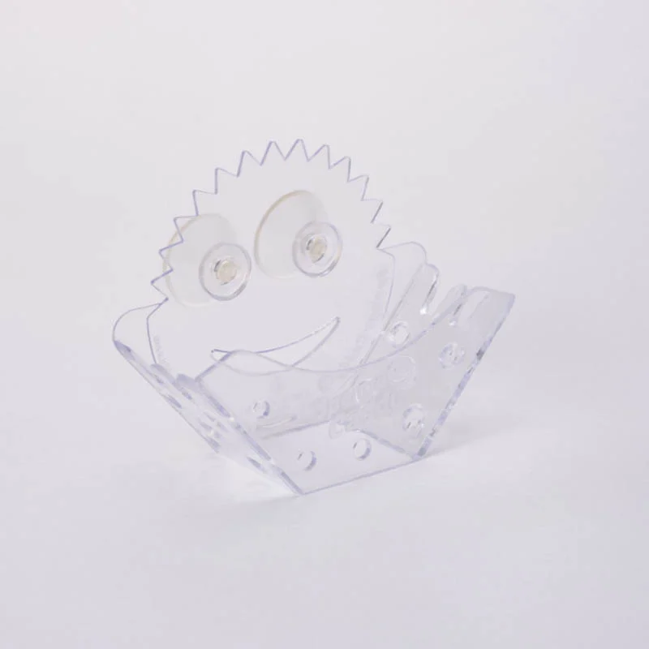

One of the standout features of the Scrub Daddy is that it changes textures based on the temperature of the water
It is firm and rigid in cold water to help remove debris, but also soft, compressible and absorbent in warm water to act as more of a gentle sponge
Scrub Daddy Original
Scrub Daddy’s FlexTexture® changes based on your water temperature! In warm water he’s soft and more absorbent. In cool water he’s firm for scrubbing seriously stuck-on messes. He’s ergonomic, doesn’t scratch, rinses free of debris, and resists odors for up to 8 weeks!
Scrub Daddy Tangerine Clean

For tough cleaning jobs, Tangerine Clean is the solution! Its abrasive formula helps you scour away stuck-on grime and buildup with ease to reveal sparkling surfaces. The mousse-like paste is made from 99% natural ingredients, so you can use it throughout your home.
Sponge Caddy

This universal holder can accommodate one Smile Face Sponge or several traditional shaped scrub pads.
Add convenience to your kitchen with the Sponge Caddy In Sink Sponge Holder. Say goodbye to the hassle of searching for your sponge with this practical and functional accessory.